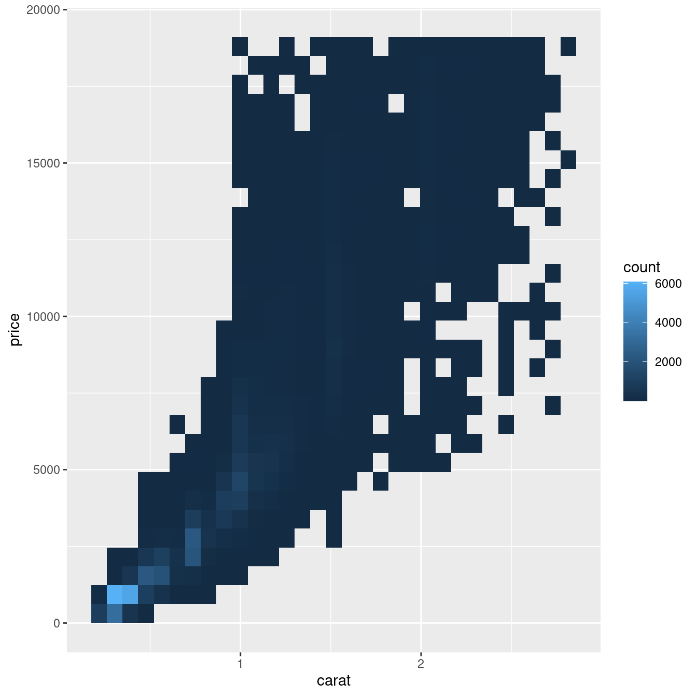
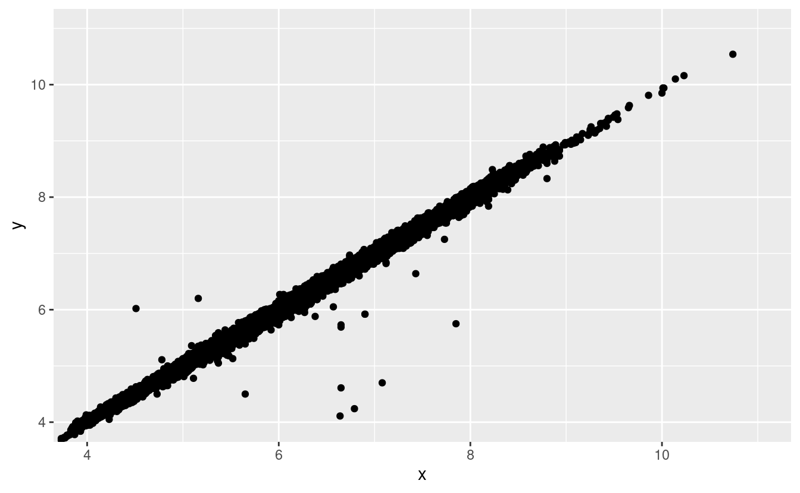

7 Analisi esplorativa
7.1 Introduzione
Questo capitolo vi mostrerà come usare la visualizzazione e la trasformazione per esplorare i vostri dati in modo sistematico, un compito che gli statistici chiamano analisi esplorativa dei dati, o EDA in breve. L’EDA è un ciclo iterativo. Voi:
Generate domande sui vostri dati.
Cercate le risposte visualizzando, trasformando e modellando i vostri dati.
Usare ciò che si impara per raffinare le domande e/o generare nuove domande.
L’EDA non è un processo formale con un rigido insieme di regole. Più che altro, l’EDA è uno stato mentale. Durante le fasi iniziali dell’EDA dovreste sentirvi liberi di investigare ogni idea che vi viene in mente. Alcune di queste idee andranno a buon fine e altre saranno vicoli ciechi. Man mano che la vostra esplorazione continua, vi concentrerete su alcune aree particolarmente produttive che alla fine metterete per iscritto e comunicherete agli altri.
L’EDA è una parte importante di qualsiasi analisi dei dati, anche se le domande ti vengono servite su un piatto d’argento, perché devi sempre indagare sulla qualità dei tuoi dati. La pulizia dei dati è solo un’applicazione dell’EDA: vi chiedete se i vostri dati soddisfino o meno le vostre aspettative. Per fare la pulizia dei dati, avrete bisogno di impiegare tutti gli strumenti dell’EDA: visualizzazione, trasformazione e modellazione.
7.2 Domande
“Non ci sono domande statistiche di routine, solo domande statistiche discutibili routine”. — Sir David Cox
Molto meglio una risposta approssimativa alla domanda giusta, che è spesso vaga, che una risposta esatta alla domanda sbagliata, che può sempre essere resa precisa”. — John Tukey
Il tuo obiettivo durante l’EDA è quello di sviluppare una comprensione dei tuoi dati. Il modo più semplice per farlo è usare le domande come strumenti per guidare la vostra indagine. Quando fate una domanda, la domanda focalizza la vostra attenzione su una parte specifica del vostro set di dati e vi aiuta a decidere quali grafici, modelli o trasformazioni fare.
L’EDA è fondamentalmente un processo creativo. E come la maggior parte dei processi creativi, la chiave per fare domande di qualità è generare una grande quantità di domande. È difficile fare domande rivelatrici all’inizio della vostra analisi perché non sapete quali intuizioni sono contenute nel vostro set di dati. D’altra parte, ogni nuova domanda che ponete vi esporrà a un nuovo aspetto dei vostri dati e aumenterà le vostre possibilità di fare una scoperta. È possibile scavare rapidamente nelle parti più interessanti dei vostri dati - e sviluppare una serie di domande che fanno riflettere - se fate seguire ad ogni domanda una nuova domanda basata su ciò che trovate.
Non c’è una regola su quali domande dovresti porre per guidare la tua ricerca. Tuttavia, due tipi di domande saranno sempre utili per fare scoperte all’interno dei tuoi dati. Queste domande possono essere formulate liberamente come:
Che tipo di variazione si verifica all’interno delle mie variabili?
Che tipo di covariazione si verifica tra le mie variabili?
Il resto di questo capitolo esaminerà queste due domande. Spiegherò cosa sono la variazione e la covariazione, e vi mostrerò diversi modi per rispondere a ciascuna domanda. Per facilitare la discussione, definiamo alcuni termini:
Una variabile è una quantità, qualità o proprietà che si può misurare.
Un valore è lo stato di una variabile quando la si misura. Il valore di una Il valore di una variabile può cambiare da una misurazione all’altra.
Una osservazione è un insieme di misurazioni fatte in condizioni simili (di solito si fanno tutte le misure di un’osservazione nello stesso tempo e sullo stesso oggetto). Un’osservazione conterrà diversi valori, ciascuno associato ad una variabile diversa. A volte mi riferirò a un’osservazione come un punto di dati.
I Dati tabulari sono un insieme di valori, ciascuno associato a una variabile e a un’osservazione. osservazione. I dati tabulari sono ordinati se ogni valore è collocato nella sua “cella”, ogni variabile nella sua colonna e ogni osservazione nella sua riga.
Finora, tutti i dati che avete visto sono stati ordinati. Nella vita reale, la maggior parte dei dati non è ordinata, quindi torneremo di nuovo su queste idee in [dati ordinati].
7.3 Variazione
La Variazione è la tendenza dei valori di una variabile a cambiare da una misurazione all’altra. Puoi vedere facilmente la variazione nella vita reale; se misuri qualsiasi variabile continua due volte, otterrai due risultati diversi. Questo è vero anche se si misurano quantità che sono costanti, come la velocità della luce. Ognuna delle vostre misurazioni includerà una piccola quantità di errore che varia da misura a misura. Le variabili categoriche possono anche variare se misurate attraverso soggetti diversi (per esempio i colori degli occhi di persone diverse), o tempi diversi (per esempio i livelli di energia di un elettrone in momenti diversi). Ogni variabile ha il suo modello di variazione, che può rivelare informazioni interessanti. Il modo migliore per capire questo modello è quello di visualizzare la distribuzione dei valori della variabile.
7.3.1 Visualizzare le distribuzioni
Il modo in cui si visualizza la distribuzione di una variabile dipende dal fatto che la variabile sia categorica o continua. Una variabile è categorica se può assumere solo uno di un piccolo insieme di valori. In R, le variabili categoriche sono solitamente salvate come fattori o vettori di caratteri. Per esaminare la distribuzione di una variabile categorica, usate un grafico a barre:

L’altezza delle barre mostra quante osservazioni si sono verificate con ogni valore x. Puoi calcolare questi valori manualmente con dplyr::count():
diamonds %>%
count(cut)
#> # A tibble: 5 × 2
#> cut n
#> <ord> <int>
#> 1 Fair 1610
#> 2 Good 4906
#> 3 Very Good 12082
#> 4 Premium 13791
#> 5 Ideal 21551Una variabile è continua se può prendere uno qualsiasi di un insieme infinito di valori ordinati. I numeri e le date-ora sono due esempi di variabili continue. Per esaminare la distribuzione di una variabile continua, usate un istogramma:
ggplot(data = diamonds) +
geom_histogram(mapping = aes(x = carat), binwidth = 0.5)
Puoi calcolarlo a mano combinando dplyr::count() e ggplot2::cut_width():
diamonds %>%
count(cut_width(carat, 0.5))
#> # A tibble: 11 × 2
#> `cut_width(carat, 0.5)` n
#> <fct> <int>
#> 1 [-0.25,0.25] 785
#> 2 (0.25,0.75] 29498
#> 3 (0.75,1.25] 15977
#> 4 (1.25,1.75] 5313
#> 5 (1.75,2.25] 2002
#> 6 (2.25,2.75] 322
#> # … with 5 more rowsUn istogramma divide l’asse x in intervalli equamente distanziati e poi usa l’altezza di una barra per mostrare il numero di osservazioni che rientrano in ciascun intervallo. Nel grafico qui sopra, la barra più alta mostra che quasi 30.000 osservazioni hanno un valore di carat tra 0,25 e 0,75, che sono i bordi sinistro e destro della barra.
Potete impostare la larghezza degli intervalli in un istogramma con l’argomento binwidth, che è misurato nelle unità della variabile x. Dovreste sempre esplorare una varietà di larghezze di binario quando lavorate con gli istogrammi, poiché diverse larghezze di binario possono rivelare diversi modelli. Per esempio, ecco come appare il grafico qui sopra quando ingrandiamo solo i diamanti con una dimensione inferiore a tre carati e scegliamo una larghezza di banda più piccola.
smaller <- diamonds %>%
filter(carat < 3)
ggplot(data = smaller, mapping = aes(x = carat)) +
geom_histogram(binwidth = 0.1)
Se vuoi sovrapporre più istogrammi nello stesso grafico, ti consiglio di usare geom_freqpoly() invece di geom_histogram(). La funzione geom_freqpoly() esegue lo stesso calcolo di geom_histogram(), ma invece di visualizzare i conteggi con delle barre, utilizza delle linee. È molto più facile capire le linee sovrapposte rispetto alle barre.
ggplot(data = smaller, mapping = aes(x = carat, colour = cut)) +
geom_freqpoly(binwidth = 0.1)
Ci sono alcune sfide con questo tipo di grafico, su cui torneremo in visualizzare una variabile categorica e una continua.
Ora che potete visualizzare la variazione, cosa dovreste cercare nei vostri grafici? E che tipo di domande successive dovresti fare? Ho messo insieme una lista qui sotto dei tipi di informazioni più utili che troverete nei vostri grafici, insieme ad alcune domande di follow-up per ogni tipo di informazione. La chiave per fare buone domande di follow-up sarà fare affidamento sulla tua curiosità (Cosa vuoi sapere di più?) e sul tuo scetticismo (Come potrebbe essere fuorviante?).
7.3.2 Valori tipici
Sia nei grafici a barre che negli istogrammi, le barre alte mostrano i valori comuni di una variabile, e le barre più corte mostrano i valori meno comuni. I punti che non hanno barre rivelano valori che non sono stati visti nei vostri dati. Per trasformare queste informazioni in domande utili, cercate qualcosa di inaspettato:
Quali valori sono i più comuni? Perché?
Quali valori sono rari? Perché? Corrisponde alle tue aspettative?
Riesci a vedere qualche schema insolito? Cosa potrebbe spiegarli?
Come esempio, l’istogramma qui sotto suggerisce diverse domande interessanti:
Perché ci sono più diamanti a carati interi e frazioni comuni di carati?
Perché ci sono più diamanti leggermente a destra di ogni picco rispetto a quelli sono leggermente a sinistra di ogni picco?
Perché non ci sono diamanti più grandi di 3 carati?
ggplot(data = smaller, mapping = aes(x = carat)) +
geom_histogram(binwidth = 0.01)I raggruppamenti di valori simili suggeriscono l’esistenza di sottogruppi nei tuoi dati. Per capire i sottogruppi, chiedetevi:
Come sono simili tra loro le osservazioni all’interno di ogni cluster?
In che modo le osservazioni in cluster separati sono diverse l’una dall’altra?
Come puoi spiegare o descrivere i cluster?
Perché l’aspetto dei cluster potrebbe essere fuorviante?
L’istogramma qui sotto mostra la durata (in minuti) di 272 eruzioni dell’Old Faithful Geyser nel Parco Nazionale di Yellowstone. I tempi di eruzione sembrano essere raggruppati in due gruppi: ci sono eruzioni brevi (di circa 2 minuti) ed eruzioni lunghe (4-5 minuti), ma poco nel mezzo.
ggplot(data = faithful, mapping = aes(x = eruptions)) +
geom_histogram(binwidth = 0.25)Molte delle domande di cui sopra vi spingeranno ad esplorare una relazione tra variabili, per esempio, per vedere se i valori di una variabile possono spiegare il comportamento di un’altra variabile. Ci arriveremo tra poco.
7.3.3 Valori insoliti
I valori anomali sono osservazioni insolite; punti di dati che non sembrano adattarsi allo schema. A volte i valori anomali sono errori di inserimento dei dati; altre volte i valori anomali suggeriscono importanti novità scientifiche. Quando si hanno molti dati, i valori anomali sono a volte difficili da vedere in un istogramma. Per esempio, prendiamo la distribuzione della variabile y dal set di dati dei diamanti. L’unica prova dell’esistenza di outlier sono i limiti insolitamente ampi sull’asse delle x.
ggplot(diamonds) +
geom_histogram(mapping = aes(x = y), binwidth = 0.5)Ci sono così tante osservazioni nei bin comuni che i bin rari sono così corti che non potete vederli (anche se forse se fissate intensamente lo 0 noterete qualcosa). Per rendere facile vedere i valori insoliti, abbiamo bisogno di zoomare a piccoli valori dell’asse y con coord_cartesian():
ggplot(diamonds) +
geom_histogram(mapping = aes(x = y), binwidth = 0.5) +
coord_cartesian(ylim = c(0, 50))(coord_cartesian() ha anche un argomento xlim() per quando avete bisogno di zoomare sull’asse x. ggplot2 ha anche le funzioni xlim() e ylim() che lavorano in modo leggermente diverso: buttano via i dati al di fuori dei limiti).
Questo ci permette di vedere che ci sono tre valori insoliti: 0, ~30, e ~60. Li tiriamo fuori con dplyr:
unusual <- diamonds %>%
filter(y < 3 | y > 20) %>%
select(price, x, y, z) %>%
arrange(y)
unusual
#> # A tibble: 9 × 4
#> price x y z
#> <int> <dbl> <dbl> <dbl>
#> 1 5139 0 0 0
#> 2 6381 0 0 0
#> 3 12800 0 0 0
#> 4 15686 0 0 0
#> 5 18034 0 0 0
#> 6 2130 0 0 0
#> 7 2130 0 0 0
#> 8 2075 5.15 31.8 5.12
#> 9 12210 8.09 58.9 8.06La variabile y misura una delle tre dimensioni di questi diamanti, in mm. Sappiamo che i diamanti non possono avere una larghezza di 0mm, quindi questi valori devono essere errati. Potremmo anche sospettare che le misure di 32mm e 59mm non siano plausibili: quei diamanti sono lunghi più di un pollice, ma non costano centinaia di migliaia di dollari!
È una buona pratica ripetere l’analisi con e senza i valori anomali. Se hanno un effetto minimo sui risultati, e non riesci a capire perché sono lì, è ragionevole sostituirli con valori mancanti e andare avanti. Tuttavia, se hanno un effetto sostanziale sui tuoi risultati, non dovresti abbandonarli senza giustificazione. Dovrai capire cosa li ha causati (ad esempio un errore di inserimento dati) e rendere noto che li hai rimossi nel tuo scritto.
7.3.4 Esercizi
Esplora la distribuzione di ciascuna delle variabili
x,yez. indiamanti. Cosa hai imparato? Pensa a un diamante e a come potresti decidere quale dimensione è la lunghezza, la larghezza e la profondità.Esplora la distribuzione del
prezzo. Scopri qualcosa di insolito o sorprendente? (Suggerimento: pensa attentamente allalarghezza di bandae assicurati di di provare una vasta gamma di valori).Quanti diamanti sono 0,99 carati? Quanti sono da 1 carato? Quale pensi che sia la causa della differenza?
Confrontate e contrastate
coord_cartesian()vsxlim()oylim()quando zoomare su un istogramma. Cosa succede se lasciatebinwidthnon impostato? Cosa succede se provate a zoomare in modo da mostrare solo metà della barra?
7.4 Valori mancanti
Se avete incontrato valori insoliti nel vostro set di dati e volete semplicemente passare al resto della vostra analisi, avete due opzioni.
-
Eliminare l’intera riga con i valori strani:
Non raccomando questa opzione perché solo perché una misurazione non è valida, non significa che tutte le misure lo siano. Inoltre, se si hanno dati di bassa qualità, quando avrete applicato questo approccio a tutte le variabili, potreste scoprire che non vi rimane alcun dato!
-
Invece, consiglio di sostituire i valori insoliti con valori mancanti. Il modo più semplice per farlo è usare
mutate()per sostituire la variabile con una copia modificata. Potete usare la funzioneifelse()per sostituire valori insoliti conNA:
ifelse() ha tre argomenti. Il primo argomento test dovrebbe essere un vettore logico. Il risultato conterrà il valore del secondo argomento, yes, quando test è TRUE, e il valore del terzo argomento, no, quando è false. In alternativa a ifelse, usate dplyr::case_when(). case_when() è particolarmente utile all’interno di mutate quando si vuole creare una nuova variabile che si basa su una combinazione complessa di variabili esistenti.
Come R, ggplot2 sottoscrive la filosofia che i valori mancanti non dovrebbero mai mancare silenziosamente. Non è ovvio dove si dovrebbero tracciare i valori mancanti, quindi ggplot2 non li include nel grafico, ma avverte che sono stati rimossi:
ggplot(data = diamonds2, mapping = aes(x = x, y = y)) +
geom_point()
#> Warning: Removed 9 rows containing missing values (`geom_point()`).
Per sopprimere questo avvertimento, impostate na.rm = TRUE:
ggplot(data = diamonds2, mapping = aes(x = x, y = y)) +
geom_point(na.rm = TRUE)Altre volte vuoi capire cosa rende le osservazioni con valori mancanti diverse dalle osservazioni con valori registrati. Per esempio, in nycflights13::flights, i valori mancanti nella variabile dep_time indicano che il volo è stato cancellato. Quindi potresti voler confrontare gli orari di partenza programmati per gli orari cancellati e non cancellati. Potete farlo creando una nuova variabile con is.na().
nycflights13::flights %>%
mutate(
cancelled = is.na(dep_time),
sched_hour = sched_dep_time %/% 100,
sched_min = sched_dep_time %% 100,
sched_dep_time = sched_hour + sched_min / 60
) %>%
ggplot(mapping = aes(sched_dep_time)) +
geom_freqpoly(mapping = aes(colour = cancelled), binwidth = 1/4)Tuttavia questo grafico non è ottimale perché ci sono molti più voli non cancellati che voli cancellati. Nella prossima sezione esploreremo alcune tecniche per migliorare questo confronto.
7.5 Covariazione
Se la variazione descrive il comportamento all’interno di una variabile, la covariazione descrive il comportamento tra le variabili. La Covariazione è la tendenza dei valori di due o più variabili a variare insieme in modo correlato. Il modo migliore per individuare la covariazione è visualizzare la relazione tra due o più variabili. Il modo in cui lo si fa dovrebbe dipendere ancora una volta dal tipo di variabili coinvolte.
7.5.1 Una variabile categorica e continua
È comune voler esplorare la distribuzione di una variabile continua suddivisa da una variabile categorica, come nel precedente poligono di frequenza. L’aspetto predefinito di geom_freqpoly() non è molto utile per questo tipo di confronto perché l’altezza è data dal conteggio. Ciò significa che se uno dei gruppi è molto più piccolo degli altri, è difficile vedere le differenze di forma. Per esempio, esploriamo come il prezzo di un diamante varia con la sua qualità:
ggplot(data = diamonds, mapping = aes(x = price)) +
geom_freqpoly(mapping = aes(colour = cut), binwidth = 500)
È difficile vedere la differenza di distribuzione perché i conteggi complessivi sono molto diversi:

Per rendere il confronto più facile, dobbiamo scambiare ciò che viene visualizzato sull’asse y. Invece di visualizzare il conteggio, visualizzeremo densità, che è il conteggio standardizzato in modo che l’area sotto ogni poligono di frequenza sia uno.
ggplot(data = diamonds, mapping = aes(x = price, y = ..density..)) +
geom_freqpoly(mapping = aes(colour = cut), binwidth = 500)
#> Warning: The dot-dot notation (`..density..`) was deprecated in ggplot2 3.4.0.
#> ℹ Please use `after_stat(density)` instead.
C’è qualcosa di piuttosto sorprendente in questo grafico - sembra che i diamanti discreti (‘fair’, la qualità più bassa) abbiano il prezzo medio più alto! Ma forse è perché i poligoni di frequenza sono un po’ difficili da interpretare - c’è molto da fare in questo grafico.
Un’altra alternativa per visualizzare la distribuzione di una variabile continua suddivisa per una variabile categorica è il boxplot. Un boxplot è un tipo di stenografia visiva per una distribuzione di valori che è popolare tra gli statistici. Ogni boxplot è composto da:
Un riquadro che si estende dal 25° percentile della distribuzione al 75° percentile, una distanza nota come intervallo interquartile (IQR). Nel mezzo del riquadro c’è una linea che mostra la mediana, cioè il 50° percentile, della distribuzione. Queste tre linee vi danno un senso della diffusione della distribuzione e se la distribuzione è simmetrica o meno intorno alla mediana o inclinata su un lato.
Punti visivi che mostrano le osservazioni che cadono a più di 1,5 volte il IQR da entrambi i bordi del riquadro. Questi punti fuori misura sono insoliti quindi sono tracciati singolarmente.
Una linea (o baffo) che si estende da ogni estremità del riquadro e va fino al
punto non anomalo più lontano nella distribuzione.

Diamo un’occhiata alla distribuzione del prezzo per taglio usando geom_boxplot():
ggplot(data = diamonds, mapping = aes(x = cut, y = price)) +
geom_boxplot()
Vediamo molte meno informazioni sulla distribuzione, ma i boxplot sono molto più compatti, quindi possiamo confrontarli più facilmente (e adattarne di più su un solo grafico). Questo supporta la scoperta controintuitiva che i diamanti di migliore qualità sono in media più economici! Negli esercizi, sarete sfidati a capire perché.
Il taglio è un fattore ordinato: giusto è peggiore di buono, che è peggiore di molto buono e così via. Molte variabili categoriche non hanno un tale ordine intrinseco, quindi potreste volerle riordinare per fare una visualizzazione più informativa. Un modo per farlo è con la funzione reorder().
Per esempio, prendete la variabile class nel set di dati mpg. Potreste essere interessati a sapere come varia il chilometraggio autostradale tra le classi:
ggplot(data = mpg, mapping = aes(x = class, y = hwy)) +
geom_boxplot()
Per rendere la tendenza più facile da vedere, possiamo riordinare la classe in base al valore mediano di hwy:
ggplot(data = mpg) +
geom_boxplot(mapping = aes(x = reorder(class, hwy, FUN = median), y = hwy))
Se avete nomi di variabili lunghi, geom_boxplot() funzionerà meglio se lo capovolgete di 90°. Potete farlo con coord_flip().
ggplot(data = mpg) +
geom_boxplot(mapping = aes(x = reorder(class, hwy, FUN = median), y = hwy)) +
coord_flip()7.5.1.1 Esercizi
Usa ciò che hai imparato per migliorare la visualizzazione degli orari di partenza dei voli cancellati rispetto a quelli non cancellati.
Quale variabile nel dataset dei diamanti è più importante per prevedere il prezzo di un diamante? Come è correlata questa variabile con il taglio? Perché la combinazione di queste due relazioni fa sì che i diamanti di qualità inferiore più costosi i diamanti di qualità inferiore?
Installate il pacchetto ggstance e create un boxplot orizzontale. Come si confronta questo con l’uso di
coord_flip()?Un problema con i boxplot è che sono stati sviluppati in un’era di di insiemi di dati molto più piccoli e tendono a visualizzare un proibitivo un numero proibitivo di “valori anomali”. Un approccio per rimediare a questo problema è il plot del valore delle lettere. Installate il pacchetto lvplot e provate ad usare
geom_lv()per visualizzare la distribuzione del prezzo rispetto al taglio. Cosa imparate? Come interpretate i grafici?Confrontate e contrastate
geom_violin()con ungeom_histogram()sfaccettato, o ungeom_freqpoly()colorato. Quali sono i pro e i contro di ciascun metodo?Se avete un piccolo set di dati, a volte è utile usare
geom_jitter()per vedere la relazione tra una variabile continua e una categorica. Il pacchetto ggbeeswarm fornisce una serie di metodi simili ageom_jitter(). Elencateli e descrivete brevemente cosa fa ciascuno di essi.
7.5.2 Due variabili categoriche
Per visualizzare la covariazione tra variabili categoriche, avrete bisogno di contare il numero di osservazioni per ogni combinazione. Un modo per farlo è affidarsi al built-in geom_count():
ggplot(data = diamonds) +
geom_count(mapping = aes(x = cut, y = color))La dimensione di ogni cerchio nel grafico mostra quante osservazioni si sono verificate per ogni combinazione di valori. La covariazione apparirà come una forte correlazione tra specifici valori x e specifici valori y.
Un altro approccio è quello di calcolare il conteggio con dplyr:
diamonds %>%
count(color, cut)
#> # A tibble: 35 × 3
#> color cut n
#> <ord> <ord> <int>
#> 1 D Fair 163
#> 2 D Good 662
#> 3 D Very Good 1513
#> 4 D Premium 1603
#> 5 D Ideal 2834
#> 6 E Fair 224
#> # … with 29 more rowsPoi visualizzate con geom_tile() e il riempimento estetico:
diamonds %>%
count(color, cut) %>%
ggplot(mapping = aes(x = color, y = cut)) +
geom_tile(mapping = aes(fill = n))
Se le variabili categoriche non sono ordinate, potreste voler usare il pacchetto seriation per riordinare simultaneamente le righe e le colonne in modo da rivelare più chiaramente i modelli interessanti. Per grafici più grandi, potreste provare i pacchetti d3heatmap o heatmaply, che creano grafici interattivi.
7.5.2.1 Esercizi
Come potreste ridimensionare il dataset di conteggio di cui sopra per mostrare più chiaramente la distribuzione del taglio nel colore o del colore nel taglio?
Usate
geom_tile()insieme a dplyr per esplorare come i ritardi medi dei voli per la destinazione e il mese dell’anno. Cosa rende il difficile da leggere? Come potreste migliorarlo?Perché è leggermente meglio usare
aes(x = color, y = cut)piuttosto cheaes(x = cut, y = color)nell’esempio sopra? piuttosto cheaes(x = cut, y = color)nell’esempio sopra?
7.5.3 Due variabili continue
Avete già visto un ottimo modo per visualizzare la covariazione tra due variabili continue: disegnare uno scatterplot con geom_point(). Potete vedere la covariazione come un modello nei punti. Per esempio, potete vedere una relazione esponenziale tra la dimensione del carato e il prezzo di un diamante.
ggplot(data = diamonds) +
geom_point(mapping = aes(x = carat, y = price))
Gli scatterplot diventano meno utili man mano che la dimensione del tuo set di dati cresce, perché i punti cominciano a sovrapporsi e si accumulano in aree di nero uniforme (come sopra). Hai già visto un modo per risolvere il problema: usare l’estetica alpha per aggiungere trasparenza.
ggplot(data = diamonds) +
geom_point(mapping = aes(x = carat, y = price), alpha = 1 / 100)Ma usare la trasparenza può essere impegnativo per insiemi di dati molto grandi. Un’altra soluzione è usare bin. In precedenza avete usato geom_histogram() e geom_freqpoly() per ‘binare’ in una dimensione. Ora imparerete come usare geom_bin2d() e geom_hex() per ‘binare’ in due dimensioni.
geom_bin2d() e geom_hex() dividono il piano delle coordinate in bin 2d e poi usano un colore di riempimento per mostrare quanti punti rientrano in ogni bin. La funzione geom_bin2d() crea dei contenitori rettangolari. geom_hex() crea bin esagonali. Avrai bisogno di installare il pacchetto hexbin per usare geom_hex().
ggplot(data = smaller) +
geom_bin2d(mapping = aes(x = carat, y = price))
# install.packages("hexbin")
ggplot(data = smaller) +
geom_hex(mapping = aes(x = carat, y = price))
Un’altra opzione è quella di binare una variabile continua in modo che si comporti come una variabile categorica. Poi puoi usare una delle tecniche per visualizzare la combinazione di una variabile categorica e una continua che hai imparato. Per esempio, potreste classificare carat e poi, per ogni gruppo, visualizzare un boxplot:
ggplot(data = smaller, mapping = aes(x = carat, y = price)) +
geom_boxplot(mapping = aes(group = cut_width(carat, 0.1)))cut_width(x, width), come usato sopra, divide x in bins di larghezza width. Per default, i boxplot hanno all’incirca lo stesso aspetto (a parte il numero di outlier) indipendentemente dal numero di osservazioni, quindi è difficile dire che ogni boxplot riassume un numero diverso di punti. Un modo per mostrarlo è rendere la larghezza del boxplot proporzionale al numero di punti con varwidth = TRUE.
Un altro approccio è quello di visualizzare approssimativamente lo stesso numero di punti in ogni bin. Questo è il compito di cut_number():
ggplot(data = smaller, mapping = aes(x = carat, y = price)) +
geom_boxplot(mapping = aes(group = cut_number(carat, 20)))
7.5.3.1 Esercizi
Invece di riassumere la distribuzione condizionale con un boxplot, si potrebbe usare un poligono di frequenza. Cosa dovete considerare quando usate
cut_width()vscut_number()? Che impatto ha su una visualizzazione di la distribuzione 2d dicarateprice?Visualizzate la distribuzione dei carati, suddivisa per prezzo.
Come fa la distribuzione del prezzo dei diamanti molto grandi a paragonarsi ai piccoli diamanti? diamanti piccoli? È come ti aspetti o ti sorprende?
Combinate due delle tecniche che avete imparato per visualizzare la distribuzione combinata di taglio, caratura e prezzo.
-
I grafici bidimensionali rivelano valori anomali che non sono visibili in quelli monodimensionali. dimensionale. Per esempio, alcuni punti nel grafico sottostante hanno una combinazione insolita di valori
xey, che rende i punti anomali anche se i loro valorixeysembrano normali se esaminati separatamente.ggplot(data = diamonds) + geom_point(mapping = aes(x = x, y = y)) + coord_cartesian(xlim = c(4, 11), ylim = c(4, 11))Perché un grafico a dispersione è una visualizzazione migliore di un grafico a celle per questo caso?
7.6 Schemi e modelli
Gli schemi nei tuoi dati forniscono indizi sulle relazioni. Se esiste una relazione sistematica tra due variabili, essa apparirà come un modello nei dati. Se individuate un modello, chiedetevi:
Questo modello potrebbe essere dovuto alla coincidenza (cioè al caso)?
Come puoi descrivere la relazione implicita nel modello?
Quanto è forte la relazione implicita nello schema?
Quali altre variabili potrebbero influenzare la relazione?
La relazione cambia se si guardano i singoli sottogruppi dei dati?
Un grafico a dispersione della lunghezza delle eruzioni dell’Old Faithful rispetto al tempo di attesa tra le eruzioni mostra un modello: tempi di attesa più lunghi sono associati a eruzioni più lunghe. Lo scatterplot mostra anche i due cluster che abbiamo notato sopra.
ggplot(data = faithful) +
geom_point(mapping = aes(x = eruptions, y = waiting))Gli schemi forniscono uno degli strumenti più utili per gli scienziati dei dati perché rivelano la covariazione. Se si pensa alla variazione come a un fenomeno che crea incertezza, la covariazione è un fenomeno che la riduce. Se due variabili covariano, puoi usare i valori di una variabile per fare previsioni migliori sui valori della seconda. Se la covariazione è dovuta a una relazione causale (un caso speciale), allora si può usare il valore di una variabile per controllare il valore della seconda.
I modelli sono uno strumento per estrarre modelli dai dati. Per esempio, considerate i dati sui diamanti. È difficile capire la relazione tra taglio e prezzo, perché taglio e carato, e carato e prezzo sono strettamente correlati. È possibile utilizzare un modello per rimuovere la relazione molto forte tra prezzo e carato in modo da poter esplorare le sottigliezze che rimangono. Il codice seguente adatta un modello che predice il price dal carat e poi calcola i residui (la differenza tra il valore predetto e il valore reale). I residui ci danno una visione del prezzo del diamante, una volta rimosso l’effetto della caratura.
library(modelr)
mod <- lm(log(price) ~ log(carat), data = diamonds)
diamonds2 <- diamonds %>%
add_residuals(mod) %>%
mutate(resid = exp(resid))
ggplot(data = diamonds2) +
geom_point(mapping = aes(x = carat, y = resid))
Una volta eliminata la forte relazione tra carati e prezzo, si può vedere ciò che ci si aspetta nella relazione tra taglio e prezzo: in relazione alle loro dimensioni, i diamanti di migliore qualità sono più costosi.
ggplot(data = diamonds2) +
geom_boxplot(mapping = aes(x = cut, y = resid))
Imparerai come funzionano i modelli e il pacchetto modelr nella parte finale del libro, modellare. Teniamo la modellazione per dopo perché capire cosa sono i modelli e come funzionano è più facile una volta che si hanno in mano gli strumenti di gestione dei dati e di programmazione.
7.7 Chiamate ggplot2
Man mano che passeremo da questi capitoli introduttivi, passeremo ad un’espressione più concisa del codice ggplot2. Finora siamo stati molto espliciti, il che è utile quando si sta imparando:
ggplot(data = faithful, mapping = aes(x = eruptions)) +
geom_freqpoly(binwidth = 0.25)Tipicamente, i primi uno o due argomenti di una funzione sono così importanti che dovreste conoscerli a memoria. I primi due argomenti di ggplot() sono data e mapping, e i primi due argomenti di aes() sono x e y. Nel resto del libro, non forniremo questi nomi. Questo risparmia la digitazione e, riducendo la quantità di boilerplate, rende più facile vedere cosa c’è di diverso tra le trame. Questa è una preoccupazione di programmazione molto importante che torneremo in funzioni.
Riscrivendo la trama precedente in modo più conciso si ottiene:
ggplot(faithful, aes(eruptions)) +
geom_freqpoly(binwidth = 0.25)A volte trasformeremo la fine di una pipeline di trasformazione dei dati in una trama. Fate attenzione alla transizione da %>% a +. Vorrei che questa transizione non fosse necessaria, ma sfortunatamente ggplot2 è stato creato prima che il tubo fosse scoperto.
7.8 Per saperne di più
Se vuoi imparare di più sui meccanismi di ggplot2, ti consiglio vivamente di prendere una copia del libro ggplot2: https://amzn.com/331924275X. È stato recentemente aggiornato, quindi include il codice di dplyr e tidyr, e ha molto più spazio per esplorare tutte le sfaccettature della visualizzazione. Sfortunatamente il libro non è generalmente disponibile gratuitamente, ma se avete una connessione con un’università potete probabilmente ottenere una versione elettronica gratuita attraverso SpringerLink.
Un’altra risorsa utile è il R Graphics Cookbook di Winston Chang. Gran parte dei contenuti sono disponibili online su http://www.cookbook-r.com/Graphs/.
Raccomando anche Graphical Data Analysis with R, di Antony Unwin. Questo è un libro di lunghezza simile al materiale trattato in questo capitolo, ma ha lo spazio per andare molto più in profondità.